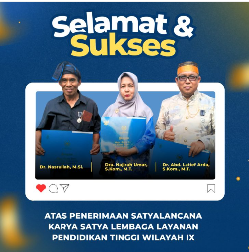

Makassar, 2 Mei 2026 — Universitas Handayani Makassar kembali menorehkan prestasi melalui capaian dosennya yang menerima penghargaan Satyalancana Karya Satya dari LLDIKTI Wilayah IX sebagai bentuk pengakuan atas dedikasi dan pengabdian di bidang pendidikan tinggi.
Penghargaan tersebut diberikan kepada tiga dosen Universitas Handayani Makassar, yaitu Dr. Nasrullah, M.Si., Dra. Najirah Umar, S.Kom., M.T., dan Dr. Abd. Latief Arda, S.Kom., M.T.. Ketiganya dinilai memiliki loyalitas, integritas, serta komitmen yang tinggi dalam menjalankan tugas sebagai tenaga pendidik.
Satyalancana Karya Satya merupakan tanda kehormatan yang diberikan oleh pemerintah kepada aparatur sipil negara yang telah menunjukkan kesetiaan, kecakapan, kejujuran, serta kedisiplinan dalam pengabdian selama kurun waktu tertentu.
Pencapaian ini menjadi bukti komitmen Universitas Handayani Makassar dalam meningkatkan kualitas sumber daya manusia, khususnya tenaga pendidik, sebagai pilar utama dalam mencetak lulusan yang unggul dan berdaya saing.
Universitas Handayani Makassar berharap penghargaan ini dapat menjadi motivasi bagi seluruh sivitas akademika untuk terus meningkatkan kinerja, profesionalisme, serta kontribusi dalam bidang pendidikan, penelitian, dan pengabdian kepada masyarakat.
Ke depan, Universitas Handayani Makassar akan terus mendukung pengembangan kompetensi dosen sebagai bagian dari upaya mewujudkan pendidikan tinggi yang berkualitas dan berkelanjutan.
LLDIKTI Wilayah IX, Prestasi Dosen, Satyalancana Karya Satya, Universitas Handayani Makassar, Penghargaan Pendidikan